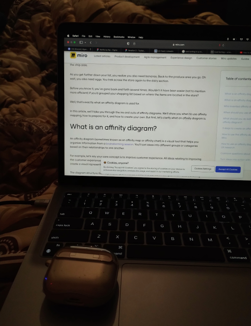
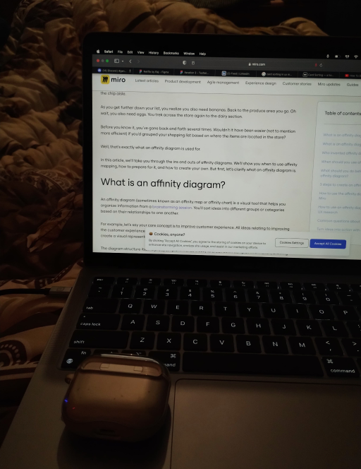
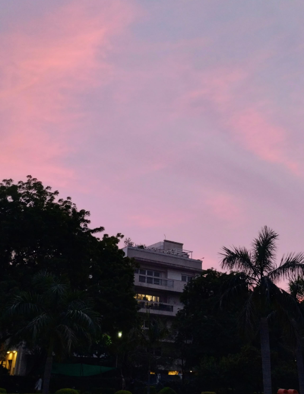
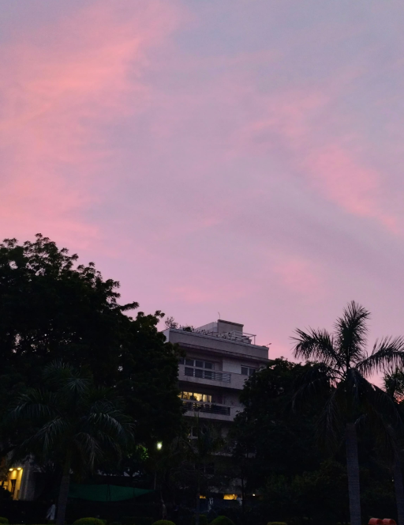

About me
I'm Raj, a 21 year old from New Delhi, India. My journey into the design world started in a rather unexpected way. Before all of this, I was really into cricket. But one day, a friend mentioned that they were planning to learn graphic design, and I wanted to understand more. I had no idea what graphic design was at the time, so I asked, "What's that?"
That simple question set me on a new path. I began exploring graphic design, and I quickly discovered the world of UX design. These are all about making things not only look good but also work smoothly for people. It reminded me of those moments when I eagerly awaited Android updates, understanding their cool interfaces. Back then, I didn't even know UX design was a thing, but that childhood curiosity stuck with me.
Now, my goal is clear. I want to become a skilled designer, focused on making life easier for people by solving everyday problems through clever design. I aspire to create products that are easy for anyone to use. Every day is a chance for me to learn and improve as I work towards making the world a more user-friendly place.

When I'm not working, I enjoy taking photos with my phone.


 


 
